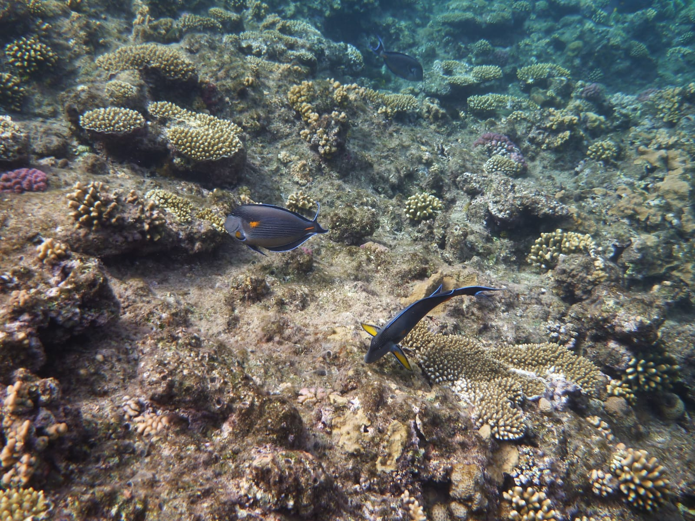

Explore the Red Sea
The Red Sea is one of the world's most remarkable marine environments, celebrated for its crystal-clear waters, spectacular coral reefs, and extraordinary biodiversity. Along Egypt's eastern coast, it offers visitors a fascinating opportunity to discover an underwater world full of color, life, and natural beauty.
From vibrant reef fish and graceful sea turtles to dolphins moving through open waters, the Red Sea reveals the wonders of marine life at every turn. This experience is not only about discovering beautiful places, but also about understanding the importance of coral reefs and learning how responsible tourism can help preserve this unique ecosystem for future generations.

Discover the Beauty Beneath the Waves
Coral reefs are among the Red Sea's greatest natural treasures. These living structures provide food, shelter, and breeding grounds for many marine species. They also support biodiversity and help sustain the ecological balance of the underwater world. Protecting coral reefs is essential to preserving the beauty and health of the Red Sea for generations to come.
More Than a Beautiful Destination
The Red Sea brings together natural beauty, scientific discovery, and unforgettable experiences. Explore its underwater wonders and discover why this remarkable ecosystem deserves our care and attention.
- Living Coral Reefs: Discover diverse coral formations that provide essential habitats for countless marine organisms.
- Remarkable Marine Species: Learn about sea turtles, dolphins, and colorful fish that inhabit the Red Sea.
- Responsible Exploration: Find out how visitors can enjoy the sea while respecting marine wildlife and reducing environmental harm.
YOUR UNDERWATER JOURNEY
Discover Your Red Sea Experience
Every journey beneath the waves reveals something extraordinary. Explore the coral reefs, meet fascinating marine creatures, and discover how to protect this natural treasure.
Explore Coral Reefs
Discover the living underwater landscapes of the Red Sea and understand how coral reefs support marine biodiversity and create habitats for countless sea creatures.
Discover the reefs →Meet Marine Life
Explore the fascinating world of Red Sea wildlife, from graceful sea turtles and dolphins to the colorful fish that bring its coral reefs to life.
Meet the creatures →Protect the Sea
Understand the challenges facing the Red Sea and discover practical ways to reduce pollution, respect marine wildlife, and help preserve this natural treasure for future generations.
Make a difference →